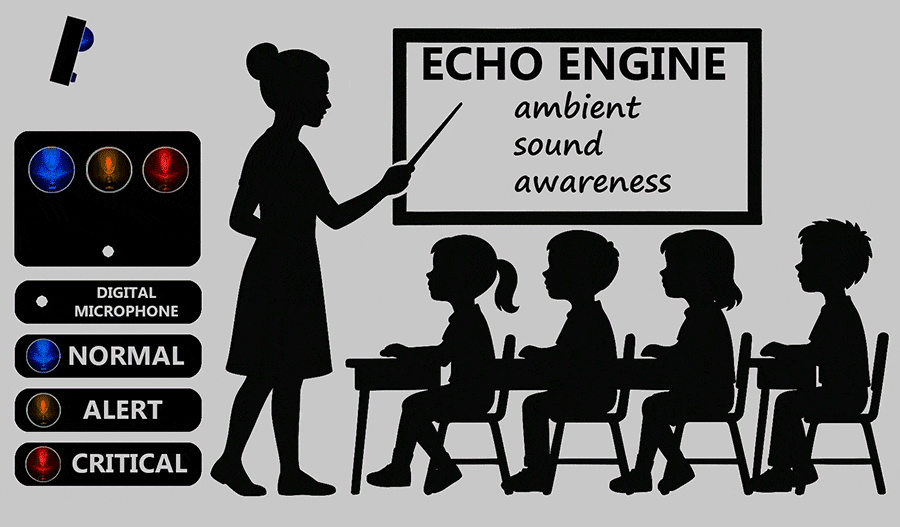

⚙️ ECHO_ENGINE — System Architecture
Welcome to the explanation of how the ECHO-ENGINE works! This page is designed to be simple and accessible, even for those who are not experts in technology or IoT (Internet of Things, which is basically connecting devices to the internet to exchange data). We will explain step by step using everyday language. If a more technical term appears, we will add a brief explanation in parentheses.
🔧 Device Overview
The ECHO-ENGINE is a compact, smart device designed to monitor and manage noise levels in environments like classrooms, especially to help autistic children who can be sensitive to loud sounds. It acts as a sound traffic light – a simple visual alert system that uses lights to indicate the noise level.
Dimensions: The device fits inside a small case approximately 220 mm wide, 160 mm high, and 60 mm deep (similar to the size of a small book).
Front Panel: There are three groups of LEDs (small, colored lights, like those on a remote control), with 5 LEDs per group.
🔵 Blue LEDs pulse gently to show the system is on and everything is calm.
🟡 Yellow LEDs turn on when the sound starts to become bothersome, serving as an initial warning.
🔴 Red LEDs flash at dangerous noise levels, indicating it's time to reduce the noise.
Installation: The device is mounted on the wall about 2.20 meters from the floor, ensuring both students and teachers can see it easily.

⚙️ How It Captures and Responds to Sound
At the heart of the ECHO-ENGINE is a special microphone called an INMP441 (a digital microphone that captures sound precisely, without distortion) connected to an ESP32 (a small computer chip, or microcontroller, that processes information quickly like a miniature brain).
- The microphone "listens" to the surrounding ambient sound.
- The ESP32 analyzes these sounds in real-time and triggers the LEDs based on the noise levels:
- Low: Blue LEDs.
- Medium (bothersome): Yellow LEDs.
- High (dangerous): Red LEDs.
- This provides immediate feedback for everyone in the room, helping to maintain a calmer environment without the need for constant intervention.
Sporadic sounds, like a quick cough, do not affect the system – it focuses on continuous patterns to avoid false alarms.
⚙️ Connection and Configuration
The ECHO-ENGINE is flexible and can work in several ways:
- With Wi-Fi: Connected to a wireless network (like home or school internet), it sends data to external servers (remote computers in the cloud) and can be configured remotely.
- Without Internet (Standalone Mode): It works on its own, without a web connection. Configuration is done via Bluetooth (short-range wireless connection, like pairing headphones) or local Wi-Fi using any Android phone.
- Silent Mode: Data is captured and stored (and sent, if connected), but without lighting up the LEDs on the panel — ideal for discreet monitoring.
All parameters, such as noise limits or languages, are adjustable via a simple interface (a screen on your phone or computer). The device initially supports 6 languages, and adding more is easy: the translations are stored in the ESP32's internal memory (using a system called LittleFS, which is like a "pen drive" inside the chip) and can be updated by connecting to GitHub (a website for sharing code and files).
Multiple "protocols" (custom rule sets, like different alert levels for specific times) can be created and saved in the memory for future use.
⚙️ Data Storage and Access
The collected data includes sound levels in dB SPL (decibels, a measure of sound intensity, with 1% accuracy) and timestamps (date and time in UTC, which is universal time to avoid timezone confusion).
- Internal Storage: Data from the last 24 hours is saved on the ESP32 and can be accessed locally or remotely, even in graphical format (like line charts showing variations over time).
- Expanded Storage: There is a slot for an SD card (a small memory card, like those in cameras), allowing data to be stored for over a year.
⚙️ Current Pilot Test
- The device remains on "stand-by" (waiting mode, saving power) until it detects sound or a timer activates it.
- For the first 15 minutes, it "listens" to the environment to calculate the normal average level.
- After that, it progressively adjusts the alerts to reach pre-defined levels.
- The teacher can change settings instantly via a mobile phone, and data is accessible in real-time.
⚙️ Project Intention
We prioritize cost-effectiveness: we use cheap, easy-to-find components available anywhere in the world, so the ECHO-ENGINE can be manufactured at an affordable price. The goal is to promote inclusion, helping to create more friendly school environments for autistic children, educators, and everyone involved, with simple and effective technology.